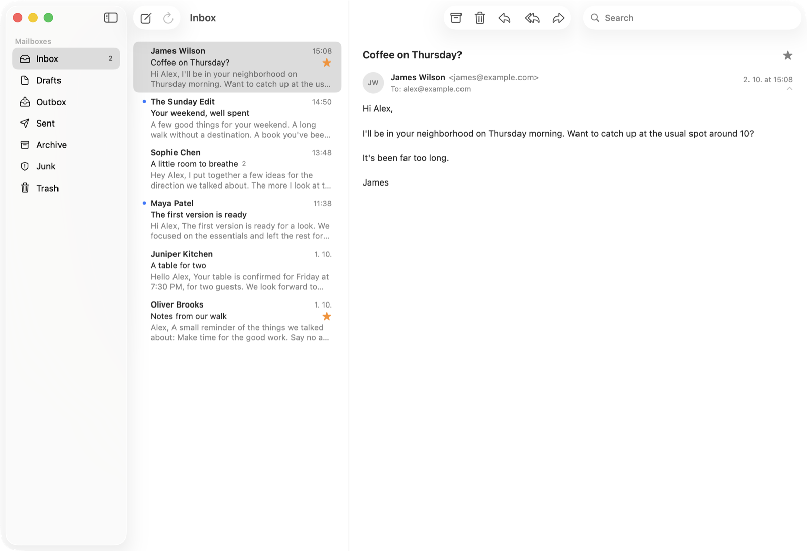

Multiple accounts, one inbox
Sign in with Google and merge several Gmail accounts into one set of folders. Replies, forwards and archive actions always go through the account a conversation belongs to.
Postie is a small native Gmail client built with SwiftUI. No Electron, no subscriptions, no AI features, no workspace bloat. Just your mail.
Free and open source under the MIT license. Requires macOS 26.

Everything you need to read and write mail, and nothing you don't.
Sign in with Google and merge several Gmail accounts into one set of folders. Replies, forwards and archive actions always go through the account a conversation belongs to.
Threaded conversation view with HTML email rendering. Long messages scroll with the conversation and quoted history is collapsed.
Write, reply, reply all and forward with bold, italic, underline, lists and links. Attachments and your Gmail signature are supported.
Drafts are saved in Gmail, so they show up in every Gmail client and can be edited later from the Drafts folder.
Search as you type across all your accounts, in the current folder or All Mail, with operators such as from: and has:attachment.
The composer suggests addresses from your Google contacts and the people you have written to.
A local SQLite cache and incremental sync keep previously loaded mail instantly available.
Inbox, Drafts, Sent, Archive, Junk and Trash, star and read/unread actions, a Dock badge for unread Inbox mail, and native light and dark mode.
Postie talks to Gmail directly from your Mac. There is no Postie server and no analytics. Sign-in credentials live in your Keychain, and loaded mail is cached in a local database on your Mac.
Postie never permanently deletes mail: Trash is Gmail's normal, recoverable Trash. It never changes your Gmail settings or your contacts. Read the full privacy policy.
Postie.xcodeproj, choose the Postie scheme and
My Mac, and run.
Unverified apps are limited to 100 users. If you fork Postie, create your own OAuth client in Google Cloud and use it instead.
Postie is an early project, built primarily as the Gmail client its author wanted to use. It supports Gmail accounts only and is not meant to replace every Gmail feature or become a generic IMAP client.